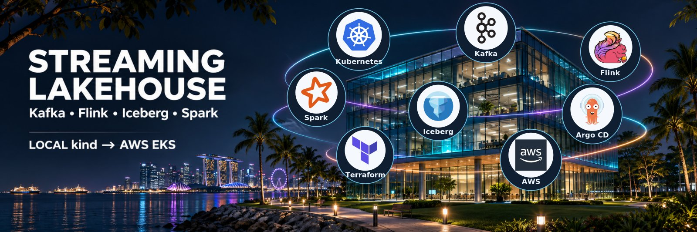
Data platform portfolio · Kubernetes, Kafka, Flink, Iceberg, AWSWhat this lab does: a Java service writes Avro events to Kafka, Flink lands them in Apache Iceberg exactly once, Spark keeps the tables healthy, and Argo CD delivers everything from Git. It runs on a local kind cluster and on an ephemeral Amazon EKS environment built with Terraform. An ops agent triages alerts through read-only tools and changes nothing until a person approves.
All ten phases are built. The lab was run with the screenshots below: Parts 1-8 on kind and Part 9 on AWS. The AWS environment was applied, verified and torn down in five recorded runs (2026-10-29 to 11-13); the latest teardown passed its leftover check on 2026-11-14. One gap: the AWS account has no Amazon Bedrock access to Claude yet, so the agent's guardrails, tools, approvals and AWS path are verified, but no live diagnosis has been produced and the eval suite has no results.
The same Helm charts run on kind and EKS; only the values differ. Locally, SeaweedFS stands in for S3 and a REST catalog on Postgres for Glue.
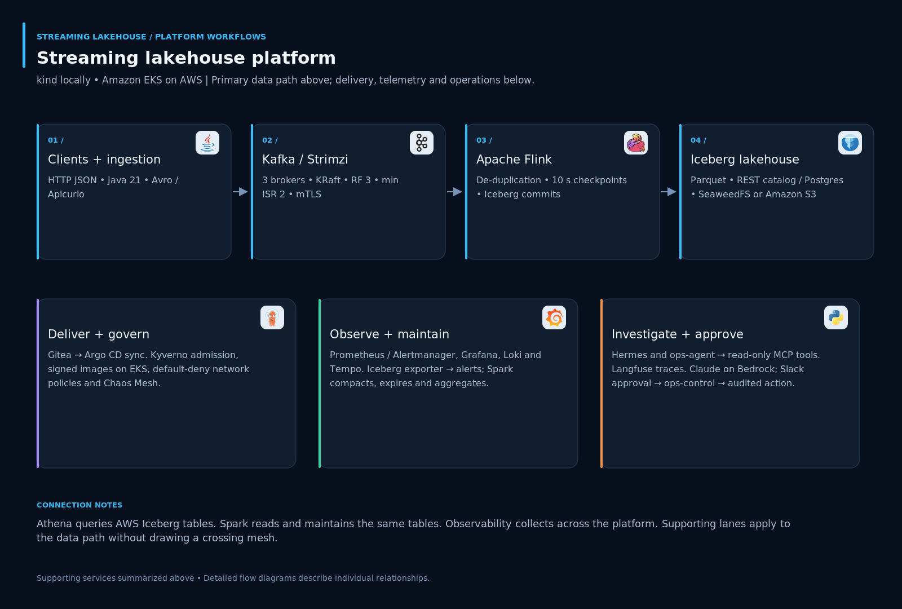
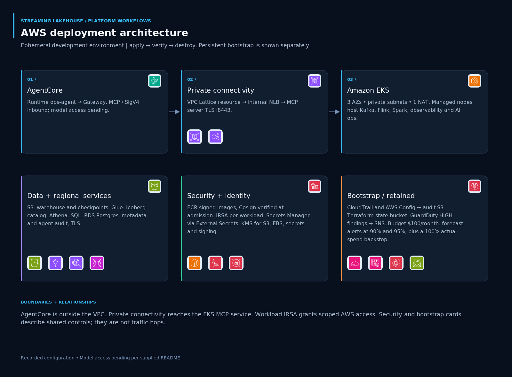
Client ids, acks=all, de-duplication in Flink state, and an Iceberg commit tied to the checkpoint.
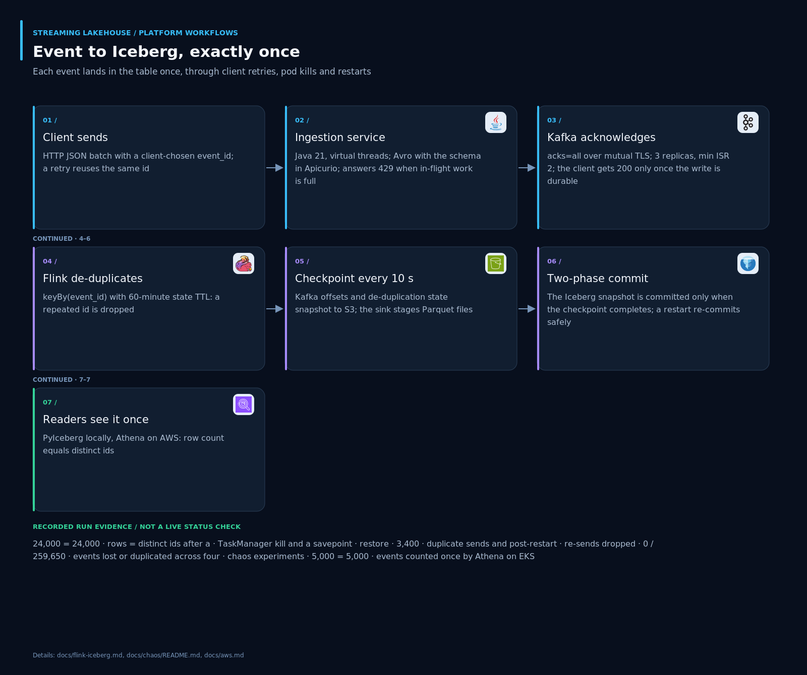
Each test ran once unless stated. The results pages in the repository say what each one does and does not prove.
| Area | Result | Source |
|---|---|---|
| Exactly once | 24,000 events with 3,400 duplicate sends and re-sends, a TaskManager kill and a savepoint restore: 24,000 rows, 24,000 distinct | docs/flink-iceberg.md |
| Chaos | Broker isolation, TaskManager kill, 400 ms Kafka latency, a paused node: 259,650 events, none lost or duplicated | docs/chaos/ |
| Iceberg maintenance | 70 small files to 1, 56 snapshots to 1; compaction under 5,000 events/s with Kafka = table at 3,501,500 | docs/spark-iceberg.md |
| JVM performance | 30,000 events/s, 0 errors, p99 23 ms; an Avro encoder change cut allocation 19%; G1 and generational ZGC compared with JFR | docs/performance/ |
| AWS end to end | 5,000 events through ingestion, Kafka, Flink and Iceberg on S3 and Glue; Athena counted 5,000 rows, 5,000 distinct | docs/aws.md |
| Security on EKS | Kafka mTLS and ACLs 10/10, network policies 9/9, admission 15/15; signed image admitted, unsigned refused | SECURITY.md |
| Observability | 27 alerts with runbooks and promtool tests; 57 of 57 dashboard queries return data; an alert fired, its runbook fixed it, it resolved | docs/observability.md |
| Agentic ops | 37 of 37 guardrail checks; 13 read-only MCP tools reached through AgentCore Gateway inside the VPC, 1.38 s per call | docs/ai-ops.md |
| Teardown | aws-down releases every volume and load balancer before terraform destroy, then checks for leftovers | docs/aws.md |
| Requirement | Built | Evidence |
|---|---|---|
| Distributed systems | Ten ADRs with alternatives and consequences | Failure modes exercised by chaos experiments |
| Java and the JVM | Ingestion service on virtual threads, bounded in-flight work, JDK HTTP server; Flink job and exporter in Java | JFR profiles, G1 vs ZGC, an allocation hot spot removed |
| Kafka | Strimzi, KRaft, 3 zones, RF=3, min ISR 2, rack awareness, mTLS and ACLs | Broker isolation and zone outage without data loss |
| Flink | Keyed de-duplication state, checkpoints and savepoints on S3, Iceberg two-phase commit | Pod kill and savepoint restore tests |
| Spark | PySpark maintenance and hourly aggregates on the Spark operator | Compaction under load; shuffle partitions and AQE experiment |
| Iceberg and formats | REST catalog locally, Glue on AWS; Avro on the wire, Parquet at rest; SSE-KMS | Schema evolution demo; table-health exporter and alerts |
| Kubernetes and Helm | Umbrella and library charts, values layered per environment, Pod Security restricted | make helm-check renders every environment |
| GitOps and release | Argo CD app of apps, ApplicationSets, per-layer projects, in-cluster Gitea | Same bootstrap on kind and EKS; signed images |
| Postgres | Iceberg catalog, registry, agent audit store; RDS Postgres 17 on AWS, TLS only | Every approval and execution in ops.* |
| Security | IRSA, KMS throughout, Kyverno, default-deny network policies, Cosign, CloudTrail, Config | Security suites on kind and EKS; NIST SP 800-53 mapping |
| Troubleshooting | SLOs with multi-window burn-rate alerts; a runbook for every alert | Chaos write-ups and "what went wrong" notes on every results page |
| AI in operations | Pydantic AI agent on Claude in Amazon Bedrock, MCP tools, Slack approvals, Langfuse, Hermes Agent, AgentCore | Guardrail tests; recorded incident scenarios for evals |
Kafka 4.3.1 on Strimzi 1.3.0 · Apicurio Registry 3.2.1
Flink 2.1.3 (operator 1.16.1) · Spark 4.1.4 (operator 2.5.2) · Iceberg 1.12.0
Argo CD 3.5.6 · Gitea 28.2.0 · Helm · Terraform, AWS provider 6.71
Kyverno 1.19.2 · External Secrets 2.14.0 · Trivy · Cosign with KMS
kube-prometheus-stack 92.14.1 · Loki 3.6 · Tempo 2.9 · Alloy 1.21 · Chaos Mesh 2.8.5
Pydantic AI 2.57 · MCP SDK 2.3 · Langfuse 4.56 · Hermes Agent 0.19 · AgentCore
Java 21 (Flink job on 17) · Python 3.14 · HCL · Bash
| Tool | Used | Needed for |
|---|---|---|
| Terraform 1.10+ | Yes | The AWS environment (AWS provider ~> 6.0) |
| AWS Console | Yes | Viewing EKS, Athena and budgets; requesting Bedrock model access |
| AWS CLI v2 | Yes | Credentials, ECR login, leftover checks in make aws-down |
| Python 3.13+ and uv | Yes | Test tools, diagrams, dependency locks |
| Git | Yes | Source control; Argo CD pulls from an in-cluster Gitea |
| Docker Desktop 29.x | Yes | Everything local; at least 10 GB of memory |
| kind, kubectl, helm | Yes | The local cluster and the charts |
| JDK 21 | Yes | Building the Java services |
| make, curl, jq, openssl, trivy, Graphviz | Yes | The scripts, the security scan, the diagrams |
| Jenkins | No | No CI server: the test gate is make targets, and Argo CD does the delivery |
| GCP Console, Google SDK | No | The project runs on kind and AWS only |
full-cloud-dashboard-project/ ├── apps/ # Application code, one folder per service │ ├── ingestion-service/ # Java 21 HTTP ingestion service and load generator │ ├── flink-iceberg-job/ # Flink job (Java 17): Kafka to Iceberg, exactly once │ ├── spark-jobs/ # PySpark: Iceberg maintenance and hourly aggregates │ ├── iceberg-exporter/ # Prometheus exporter for Iceberg table health │ ├── mcp-platform-tools/ # MCP server: 13 read-only platform tools │ ├── ai-ops/ # Ops agent, approval service, eval runner │ └── hermes/ # Hermes Agent image (on-call assistant) ├── chaos/experiments/ # Chaos Mesh faults: broker isolation, latency, pod kill ├── docs/ # Documentation (index.md) │ ├── architecture-decisions/ # ADRs 0001-0010 │ ├── chaos/ # Chaos experiment results │ ├── diagrams/ # Architecture diagrams and workflow infographics │ ├── lab/ # Lab runbook (RUNBOOK.md) and screenshots (images/) │ ├── performance/ # JVM performance results │ ├── runbooks/ # Alert runbooks, also read by the ops agent │ ├── security/ # NIST SP 800-53 control mapping │ └── *.md # Results: flink-iceberg, spark-iceberg, aws, observability, ai-ops ├── evals/agent-scenarios/ # Recorded incidents for the agent eval suite ├── gitops/ # Argo CD │ ├── bootstrap/ # Argo CD, Gitea, projects, root app │ ├── argocd/ # Applications and ApplicationSets │ └── operators/ # Operator values per environment (local, aws) ├── helm/ # Helm │ ├── charts/ # Umbrella chart (platform), library chart, 13 sub-charts │ └── values/ # Overlays: local, aws, dev, staging, prod ├── local/ # Local platform │ ├── kind-config.yaml # 4-node kind cluster, 3 worker zones │ ├── container-images/ # Iceberg REST catalog image with the Postgres driver │ ├── scripts/ # Scripts behind every make target │ └── tools/ # Dashboard, diagram, table and test tools ├── terraform/ # AWS infrastructure │ ├── bootstrap/ # Account level: state bucket, budgets, audit trail │ ├── envs/dev/ # Ephemeral EKS environment │ └── modules/cost-guardrails/ # Budget alerts module ├── Makefile # Every command (make help) ├── CONTRIBUTING.md # Tests per component, change checklist ├── SECURITY.md # Security controls and vulnerability reporting ├── CODE_OF_CONDUCT.md ├── LICENSE.txt # MIT └── README.md # Project overview
The full lab, with sign-ins and expected output, is docs/lab/RUNBOOK.md. Parts 1-8 are free and run on kind; Part 9 costs about $0.40 an hour while up.
| Part | What it shows | Commands |
|---|---|---|
| 1. Platform up | A 4-node kind cluster; Argo CD installs everything from in-cluster Git (20-40 min first time) | make local-up, make gitops-status, make local-smoke, make local-ports |
| 2. Tour of the UIs | Grafana dashboards, every Prometheus job up, Alertmanager, the Avro schema | Browser, through make local-ports |
| 3. Exactly once | Load through the real path; 3 waves, a pod kill and a savepoint restore; a column added end to end | make local-loadtest, make local-test-exactly-once, make local-demo-schema-evolution |
| 4. Spark | Compaction, manifest rewrite, snapshot expiry, hourly aggregates | make local-deploy-spark, make local-spark-maintenance, make local-spark-aggregate |
| 5. GitOps | A change delivered from Git; a manual change reverted by Argo CD | make helm-check, make gitops-push |
| 6. Security | Trivy gate and SBOMs; Kafka mTLS and ACLs, network policies, admission | make security-scan, make security-test |
| 7. Alerts and chaos | Alert rule tests; one broker cut off for 6 minutes under load | make rules-test, make chaos EXP=broker-isolation |
| 8. Ops agent | Unit tests and 37 guardrail checks, including a real approved action | make ai-test, make ai-deploy, make ai-ops-test |
| 9. AWS (optional) | Plan, a person confirms, apply, the same GitOps bootstrap, smoke and security tests | make aws-init aws-plan, make aws-apply, make aws-up, make aws-smoke |
Parts 1-8 on kind (2026-11-13) and Part 9 on EKS (2026-11-01). Select a screenshot to open it at full size. Usernames, host names and browser profiles are blurred.
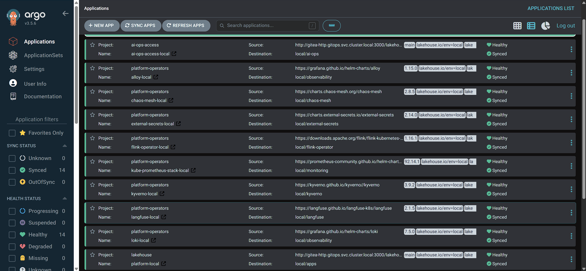
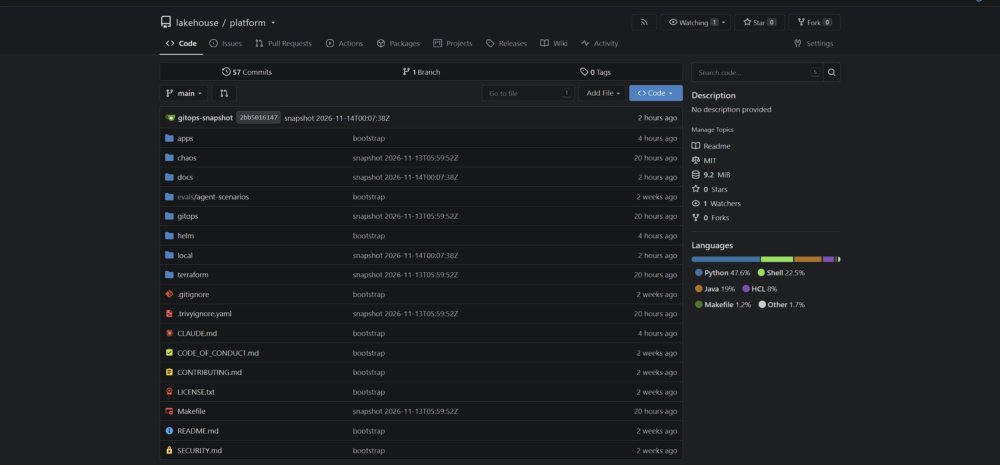
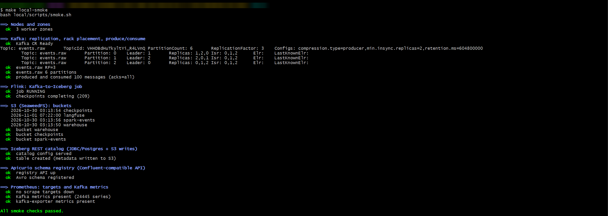
make local-smoke passing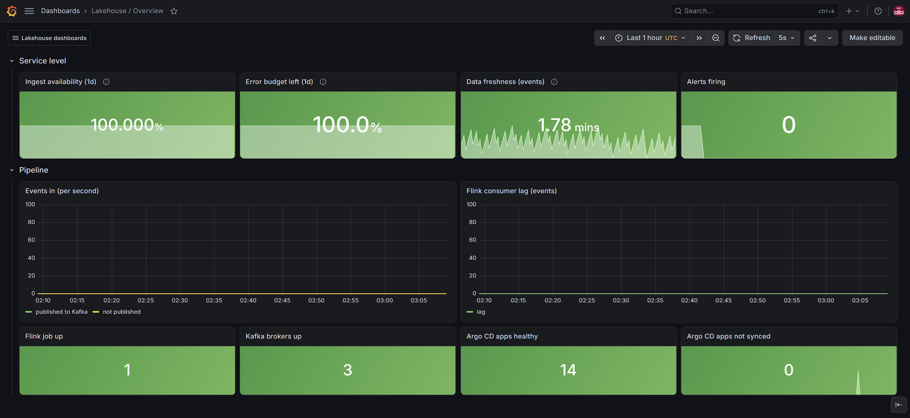
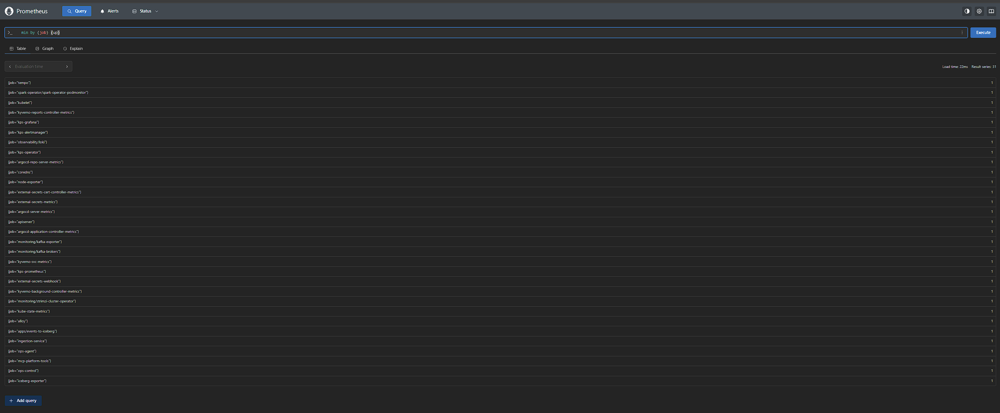
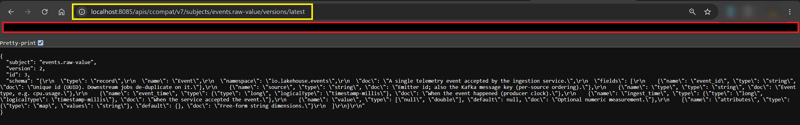
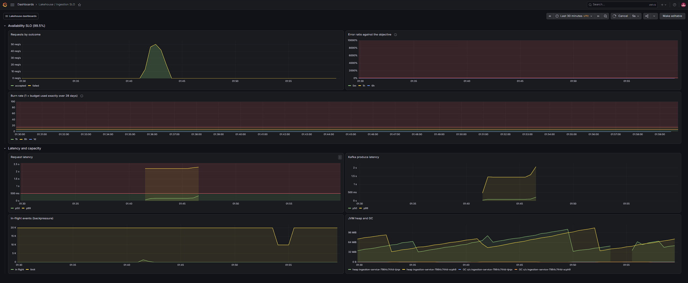
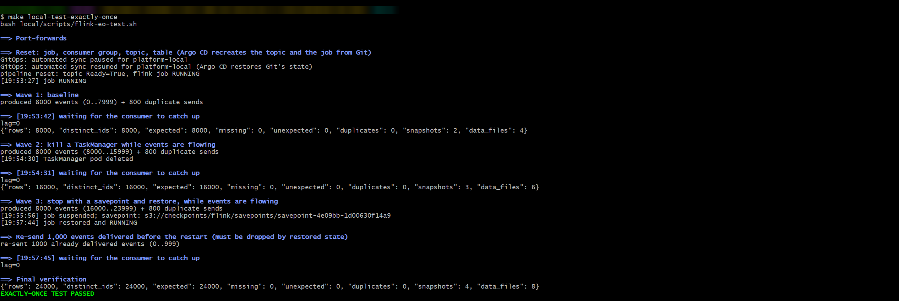
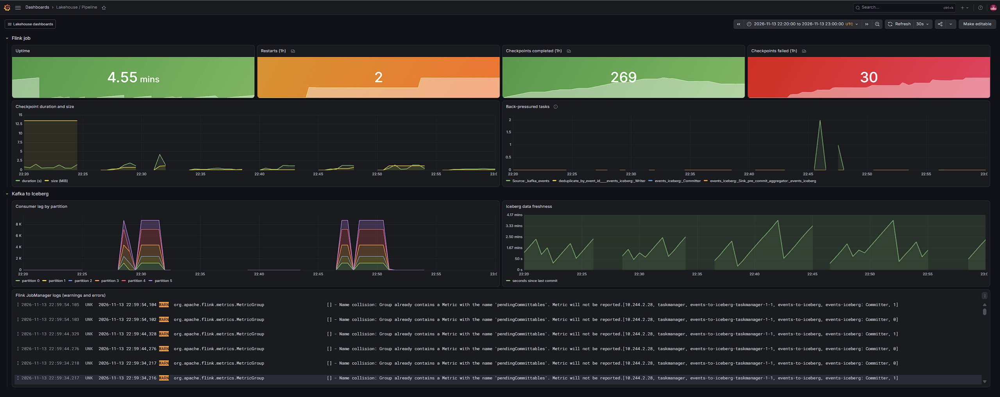
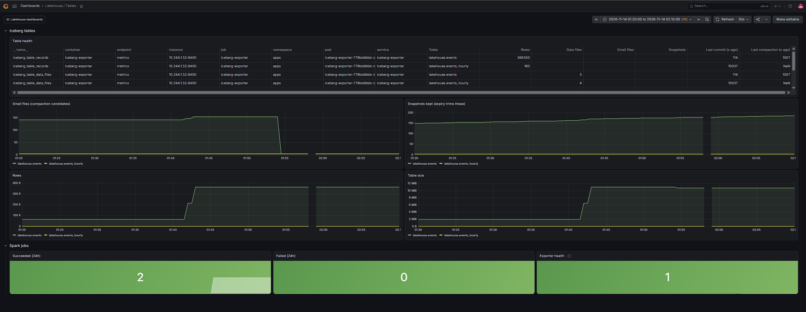
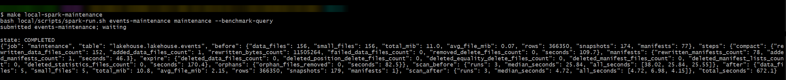
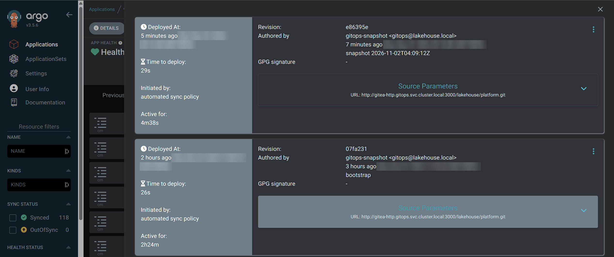
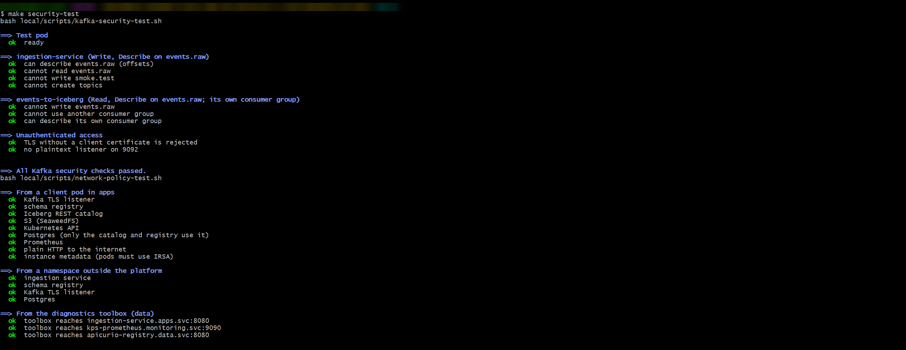
make security-test: Kafka, network, admission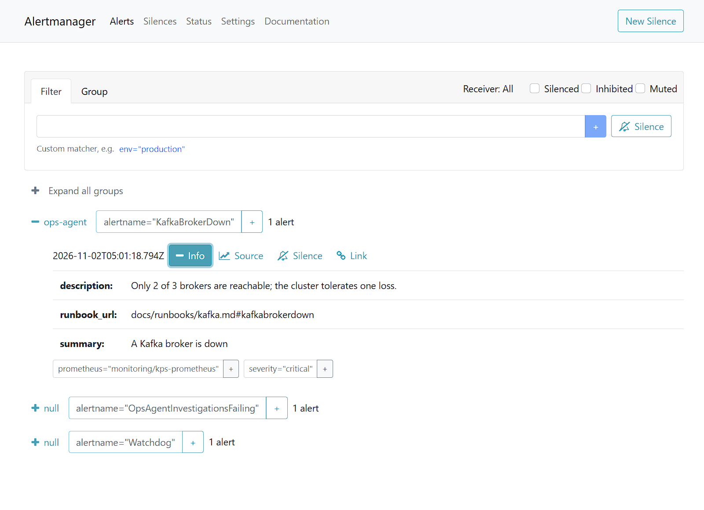
KafkaBrokerDown firing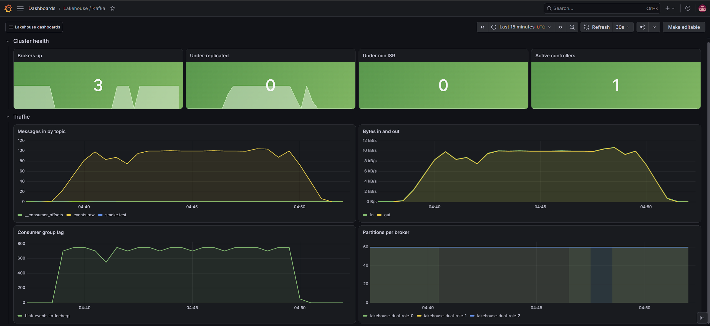
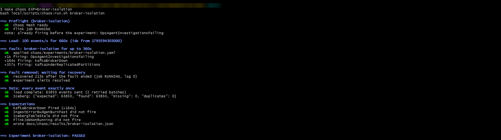
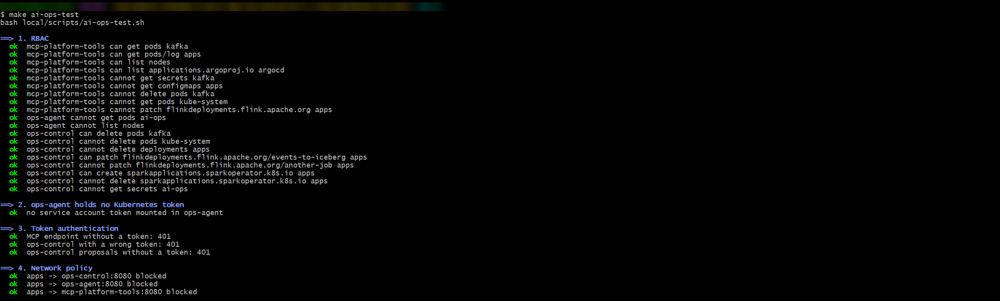
make ai-ops-test: 37 guardrail checks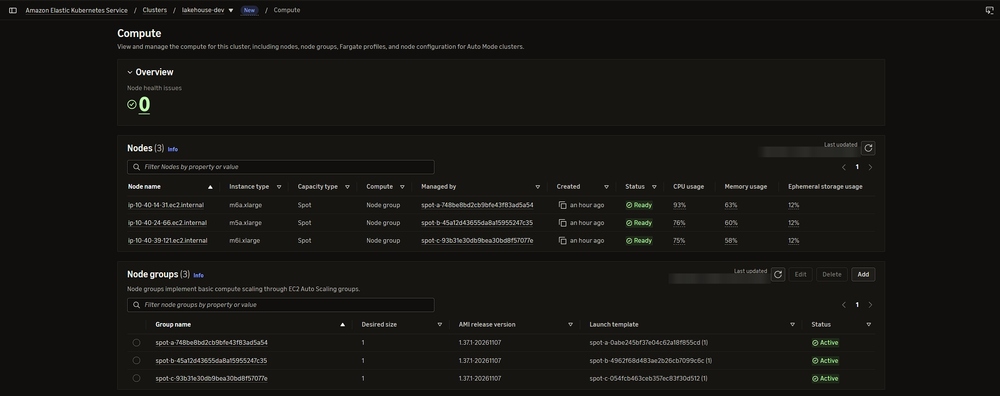
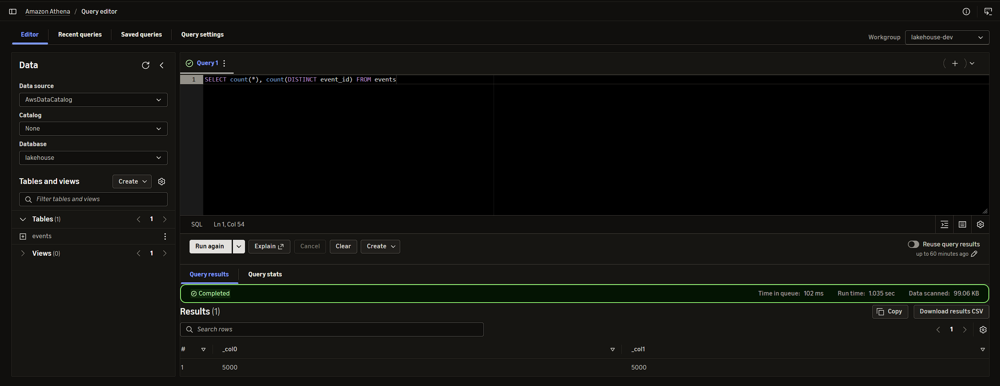
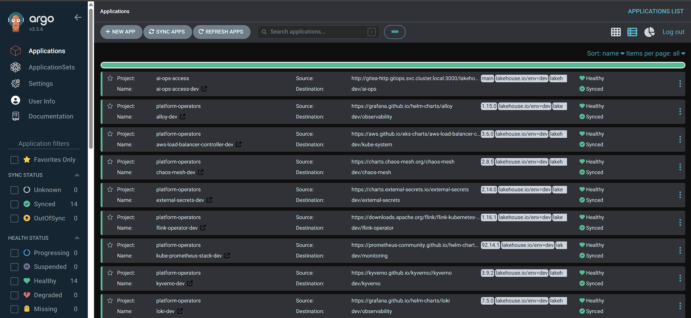
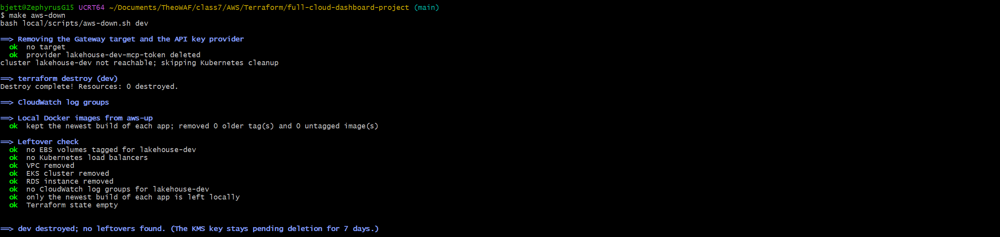
make aws-down: no leftoversScreenshot 18 (a Langfuse trace) needs Bedrock model access and was skipped. Screenshots 01, 13, 17 and 21 have a second part in the repository.
make aws-down deletes the Kubernetes volumes and load balancers first, so AWS releases the EBS volumes and NLBs, then runs terraform destroy, deletes the environment's log groups, and checks for leftovers (EBS, load balancers, VPC, EKS, RDS, Terraform state). Locally, make local-down deletes the cluster and docker desktop stop stops Docker.
The environment costs about $0.40 an hour on three Spot nodes and nothing once destroyed. The bootstrap stack (state bucket, KMS key, CloudTrail, AWS Config, budget alerts) stays on purpose. Budget alerts notify; they do not stop spend.
acks=all, de-duplication state and a commit tied to the checkpoint together survive retries and restarts.make aws-down; the dev Terraform state is empty.aws-down now handles both.| Problem | Fix |
|---|---|
| SeaweedFS OOM-killed | Memory limit from 1 GiB to 3 GiB |
| Ingestion service never ready | It now exits on a failed start, so Kubernetes restarts it |
| MCP server crashed on EKS with TLS | Start-up runs once for both listeners; a test covers it |
| Flink 2.x on Java 21 | Only experimental upstream, so the job runs on flink:2.1.3-java17 |
| Spark MERGE from a view failed | The aggregation sits inside the MERGE as a SQL subquery |
| Gateway rejected every call | AgentCore adds its own space after the credential prefix |
kubectl hangs after a restart | docker restart lakehouse-control-plane |
| Port-forward "forbidden" | Windows reserved the port: netsh interface ipv4 show excludedportrange protocol=tcp |
No systemctl or sudo was needed: every service runs as a Kubernetes workload, and containers run as non-root under Pod Security restricted.
No books, articles or videos; official documentation and the projects' GitHub repositories only.
make. The planned Cognito web dashboard is not built.